Walkthrough
Using it, start to finish
Every screenshot here comes from the bundled demo stack, which pretends to be a Spring
Boot service called checkout-api with some real problems in it. Run
npm run demo and you can follow along on the same data.
1 · Pick a service
The first screen lists every job Prometheus is scraping, busiest first. The series count is a useful proxy for how well instrumented something is — a job with 12 series will not answer much; one with several hundred usually will.
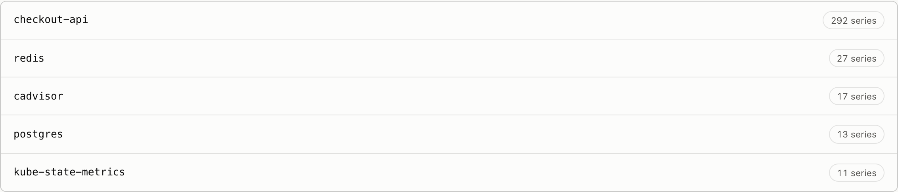
Once you pick a job, any labels worth narrowing by appear underneath — typically namespace, pod and container.
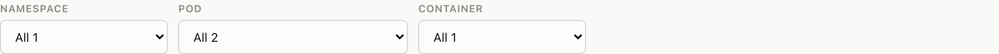
If one replica is behaving differently from its peers, the aggregate hides it. Narrow to a single pod when a chart shows one line diverging from the others, or when the CPU panel reports uneven load across replicas.
2 · Choose a question
This is the step that does the real work. Before drawing anything, the app resolves every signal the five investigations might need against the metrics this job actually exposes, and then offers only what your data can support.
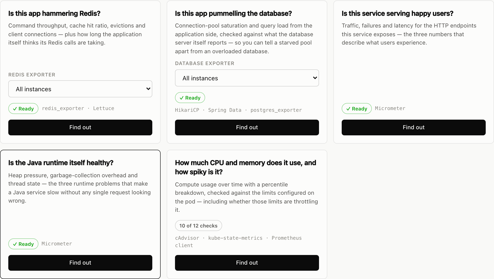
Each card carries a badge telling you how complete the answer will be:
| Badge | Means |
|---|---|
| ✓ Ready | Every check in this investigation can run. |
| 10 of 12 checks | Most of it will run. The missing checks are listed at the bottom of the report, with what to instrument to unlock them. |
| Not available | Nothing matched. Expand What is missing on the card to see which metric names it looked for. |
The line of small type under the badge — Micrometer,
HikariCP · Spring Data · postgres_exporter — is which instrumentation
conventions were recognised. If that says something you do not use, the app has matched
the wrong metrics and the answers will be wrong; check
the evidence table before trusting a report.
Investigations that need a second target
Redis and database metrics do not come from your application — they come from
redis_exporter or postgres_exporter, scraped under their own
job. Those cards get an extra dropdown.
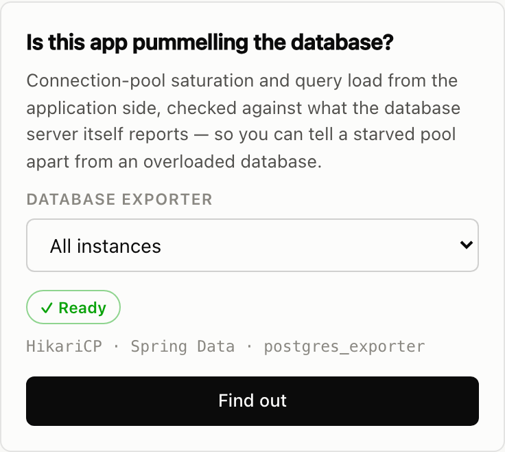
3 · Read the answer
The report leads with a verdict: the single worst thing it found, in one sentence. It is deliberately not an average — averaging findings would bury exactly the panel that matters.
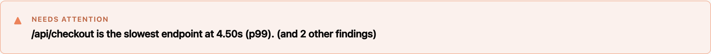
- HealthyNothing worth acting on.
- Worth a lookOutside normal, but not hurting anyone yet.
- Needs attentionDegrading behaviour you can measure.
- Acting upUsers are affected right now.
- Not enough dataThe query ran but there was nothing to measure.
Below the verdict is one control row that scopes the whole report. Changing the time range re-runs every panel against the new window.
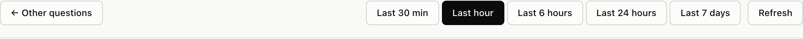
Then the headline numbers. Each one states the question it answers, the value, and a one-line reading of it.
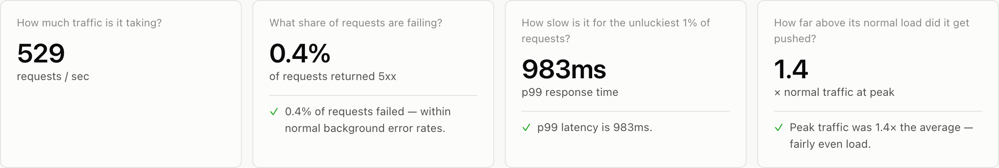
Working a panel
Every panel states the question it answers next to its title, and carries a finding underneath — the numbers, read for you.
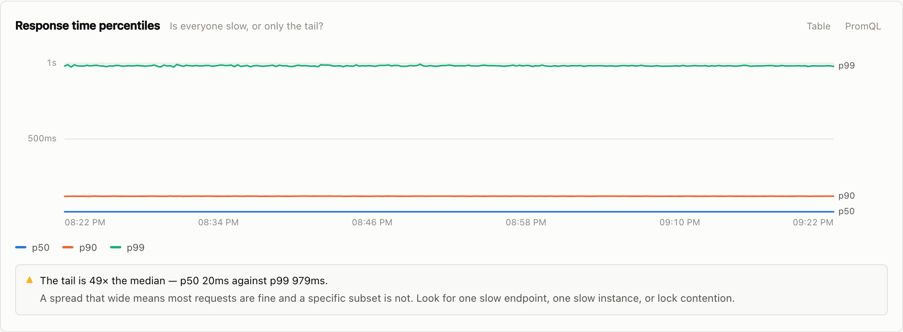
Hover anywhere on a chart for a crosshair and every series' value at that moment.
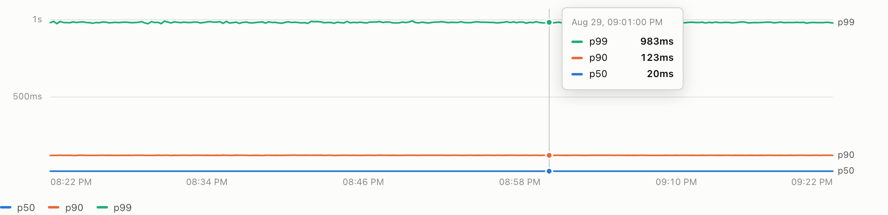
Table swaps any chart for its numbers — minimum, average, maximum and latest per series. Useful for reading exact values, and the accessible equivalent of the chart.
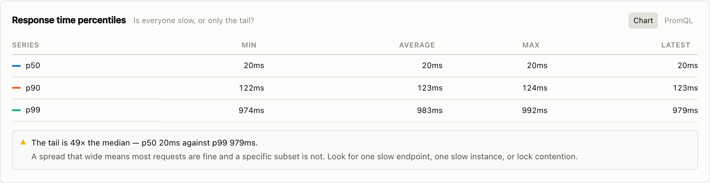
PromQL reveals the exact queries behind the panel, with a copy button for each. This is how you take something from here into Grafana or an alerting rule.
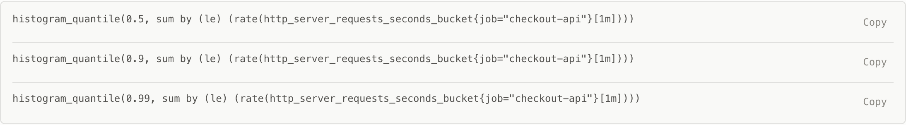
Ranked panels answer "which one" rather than "when". They are sorted worst-first with the value at the end of each bar.
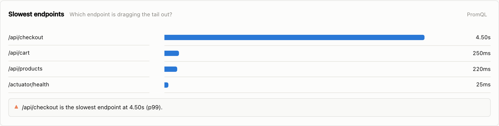
Checking the evidence
At the bottom of every report, Metrics this used shows exactly which metric in your Prometheus each abstract signal resolved to, and by which convention. This is the first thing to check if a number looks wrong.
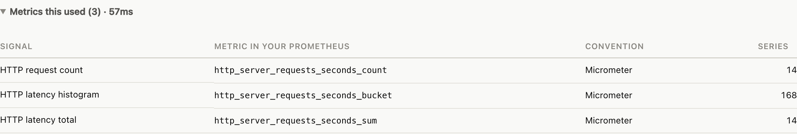
When a question is greyed out
An unavailable investigation almost never means the data does not exist. It means the app did not recognise the names. Expand What is missing and you get, for each signal it could not find, the metric names it looked for and what would produce them.
Three things to check, in order:
-
Is it the right job? Application metrics and container metrics live
under different jobs. Pick the job scraping your app's own
/metricsendpoint. - Does your instrumentation use different names? Compare the names it looked for against what you actually expose. If yours differ, add them to the signal registry — one entry, no code change beyond the list.
- Is the metric genuinely absent? The remedy line on each gap says what produces it. Histogram buckets in particular are often switched off by default, which is why latency percentiles are the most common thing missing.
The app only recognises the metric names in its signal registry. An unusual naming convention shows as unavailable even though the data is right there. Adding a candidate fixes it permanently — see Teaching it your metric names.
A worked example
Here is how the demo service's problem actually unfolds, and it is a good model for using the tool on something real.
Start with Is this service serving happy users? The verdict says
/api/checkout is the slowest endpoint at 4.50s at p99, and the percentile
panel reports the tail is 49× the median. So most requests are fine and one specific path
is not. That rules out anything global — it is not the host, and it is not every request
getting slower.
A wide tail on one endpoint points at something that endpoint alone touches. Go back and ask Is this app pummelling the database? The verdict there is that up to 14 threads were queued waiting for a connection, with 16 requests giving up entirely. The pool utilisation panel shows it hitting 100%.
Now check whether the database is the problem or the pool is. The server-side panels say the database peaked at 74% of its connection limit with a 98% buffer cache hit ratio — it is comfortable. So the database is fine and the pool in front of it is too small. That is a config change, not a query optimisation.
Each investigation is scoped to its own domain — the service health report does not know the connection pool is saturated. Connecting those two findings is still your job. It is the main thing on the list to improve.